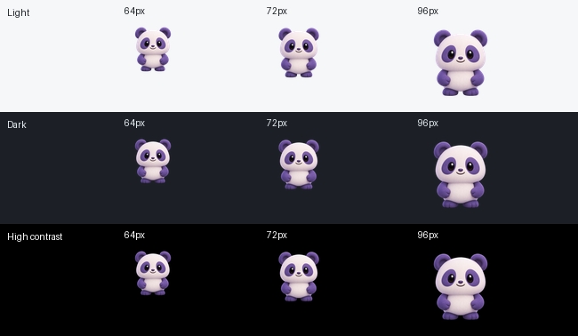
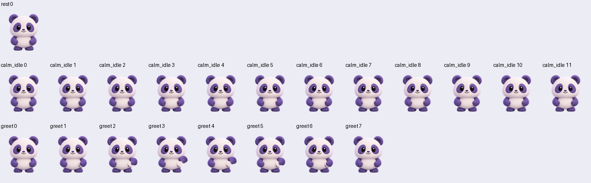
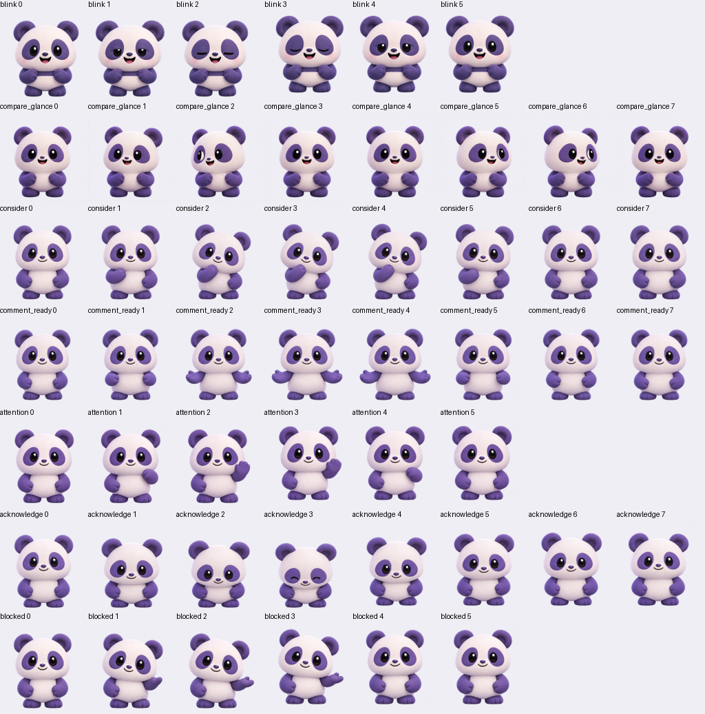

Candidate only. No acceptance controls. Native theme colors; 64/72/96 CSS pixels at 100% browser zoom. Idle is 12 frames at 250 ms, repeating. Rest remains static.

Unchanged master head, eyes, hips and feet. No embedded blink. Greeting below is a rejected articulation experiment, not production art.

